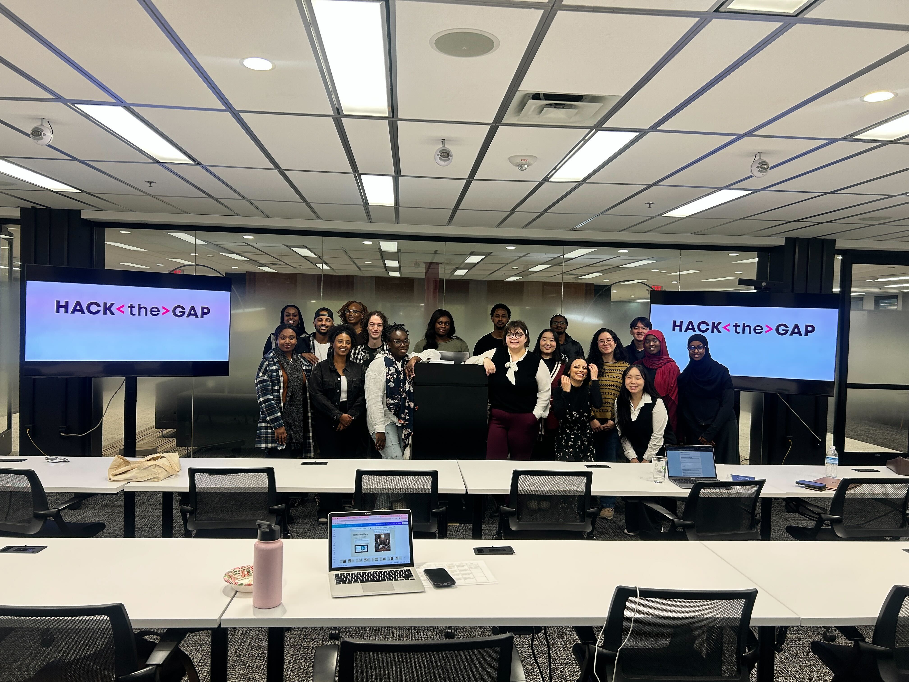
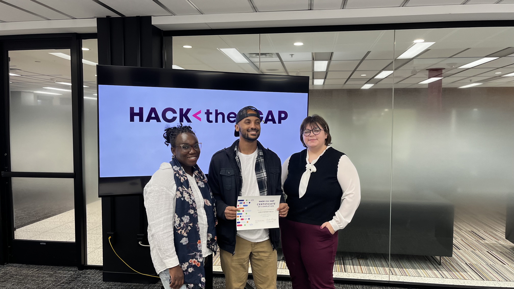

Data Analytics Experience
During my time at Hack The Gap, I gained an immersive understanding of the practices and processes used by a junior or associate data analyst in their day-to-day job. Also learned key analytical skills (data cleaning, analysis, & visualization) and tools (spreadsheets, SQL, R programming, Tableau).
Examples
I learned how to clean and organize data for analysis, and complete analysis and calculations using spreadsheets, SQL and R programming.
Examples
Then lastly understanding how to put together visualizations and presentations of data findings in dashboards, and commonly used visualization platforms.